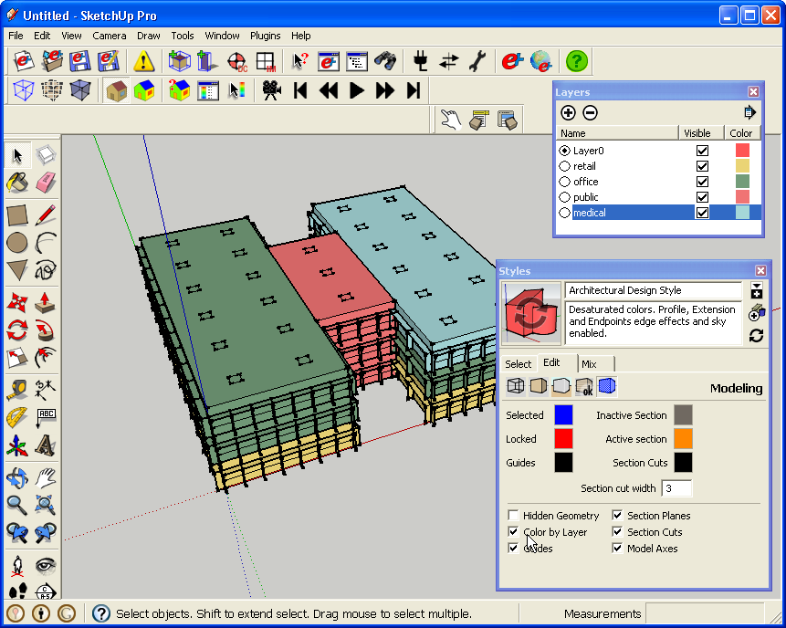

Searching for EnergyPlus Objects
Search Surfaces and Subsurfaces
- The Surface Search tool allows you to search surfaces and subsurfaces.
- You can enter search criteria in all fields, or in just one.
- If you use multiple fields, objects must match both criteria to appear in the results.
- The name search field will match partial and whole words, and is not case sensitive.
(Credit: David Goldwasser/NREL)
Model before search ins run
(Credit: David Goldwasser/NREL)
Searching on the third floor for surfaces with construction named 'ASHRAE 90.1-2004_Sec 5.5-5_0.3_0.4_fixed_west_window'.
- Results are shown by hiding everything in the model except the results.
(Credit: David Goldwasser/NREL)
search results
- There is a toolbar button for a built in SketchUp feature to view hidden geometry. Showing and hiding hidden geometry is a good way for you to get your bearings after a search.
(Credit: David Goldwasser/NREL)
viewing hidden geometry
- When you have finished using a search, you can choose "Unhide All" to show the rest of the EnergyPlus objects.
- You can run surface searches run on a selection or on the entire model.
Use Outliner to Search Groups (Zones) and Components (Daylighting:Controls and Output:IlluminanceMap)
- You can use SketchUp's built in Outliner to search for groups (zones) and components (Daylighting:Controls and Output:IlluminanceMap).
- With no search terms entered, the outliner shows all SketchUp groups and components.
- You can expand or collapse the hierarchy with the button on the right side of the dialog box.
- Enter text into the filter to run your search. The search will match partial and whole words, and is not case sensitive.
- The search affects the Outliner only, and does not change what your model looks like. However, you can click on an object in the Outliner to select or activate it.
- Outliner objects are black if no filter/search is set and red if there is a filter. To clear a filter, empty the text box at the top of the Outliner.
Outliner before search
Outliner after search
- You can run an Outliner search on top of a surface search for interesting results. You will still see hidden items on the Outliner but they will be screened back. If you want to hide specific zones, you can select them with the Outliner and then manually hide them, or you can move them to a specific layer and hide that layer.
- You also use the Outliner to filter the displayed zones (for instance to zones with "Office" in the name) and then run a Surface search on the remaining selection.
Using Layers
- You can move zones and surfaces to new layers. For example, you can assign zones to layers based on space type or assign surfaces to layers by construction. The layer assignments are not saved to the IDF and will last for the current session only. When you reopen the IDF, all objects will be back on layer0. This will be addressed in a future version of OpenStudio.
- Once your objects are on specific layer, you can control visibility of each layer to facilitate working on your model. When you hide a layer, objects on it will not be visible even if you turn on "show hidden geometry", which shows only hidden objects on layers that are active.
- You can also use SketchUp's built in "Color by Layer" to view your model by layer. You can access this through the layer window or the style window. A few styles are saved under OpenStudio/lib/resources/styles.
- You can display or hide Output:IlluminanceMap and Daylighting:Controls objects.
(Credit: David Goldwasser/NREL)
select two zones and move them with the Entity Info Window to a layer named "retail".
(Credit: David Goldwasser/NREL)
turn off all zones except those on the "office" layer.

(Credit: David Goldwasser/NREL)
Set layer colors in the "Layer" dialog box and then use the "Style" window to color by layer.
There is also an OpenStudio Menu Item to enalbe this.
|